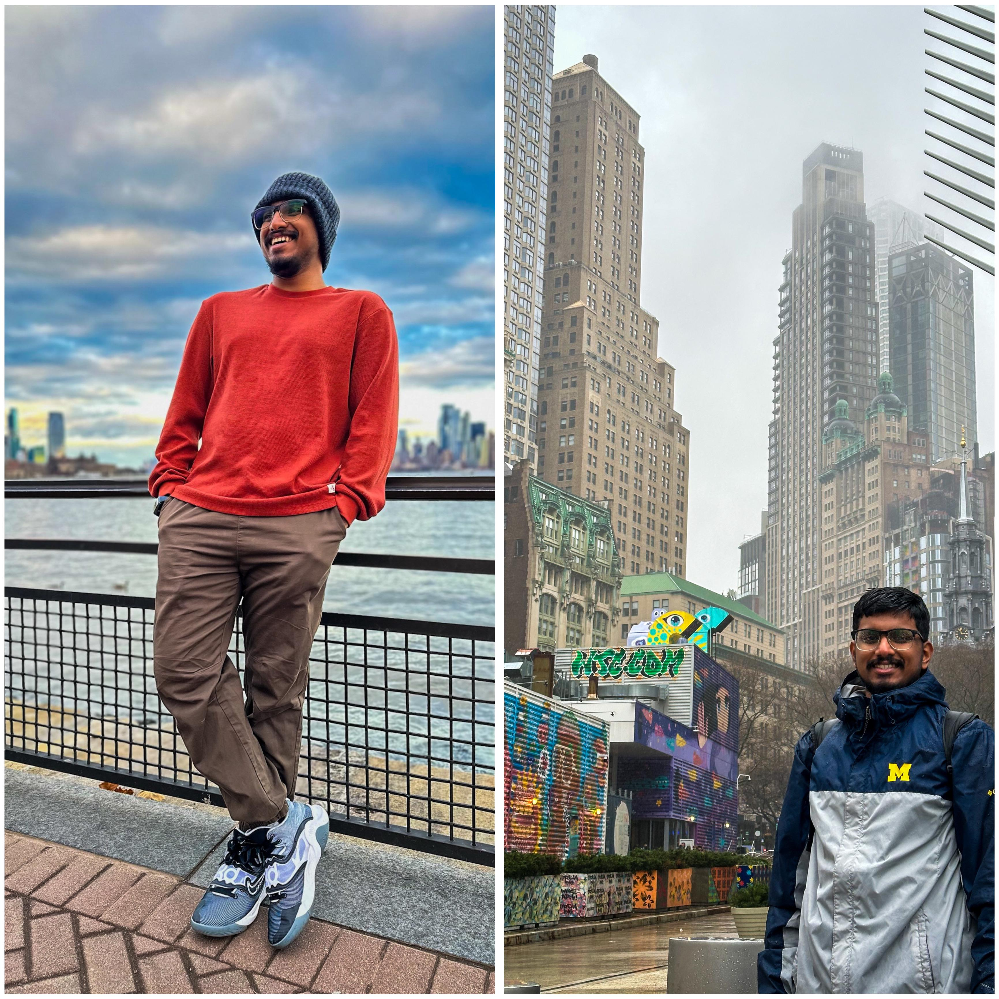

BIENVENUE!

{kind=link}
I am a graduate student at the University of Michigan, Ann Arbor, pursuing my Master of Science in Industrial and Operations Engineering. My academic journey includes studying at College of Engineering-Guindy and gaining international experience at MES Indian School (Doha) and Velammal International School (Chennai).
With a passion for Supply Chain & Operations Management, I specialize in manufacturing optimization, quality management, and driving cost savings. My experience at Saint Gobain India Pvt Ltd gave me a solid foundation in World Class Manufacturing, where I applied concepts of continuous improvement, process standardization, and efficiency optimization.
I’ve also enhanced my skills through courses at Ross School of Business, focusing on business strategy and organizational management. As a soccer team captain during school competitions, I developed strong leadership, teamwork, and strategic thinking skills, which I apply in both professional and personal projects.
Creativity is another key aspect of my approach. As an artist and designer, I bring innovative solutions to problem-solving, thinking outside the box to deliver effective results.
I’m results-oriented, always aiming for continuous growth, optimization, and impactful outcomes.
Je parle français! (DELF A1 certfified)